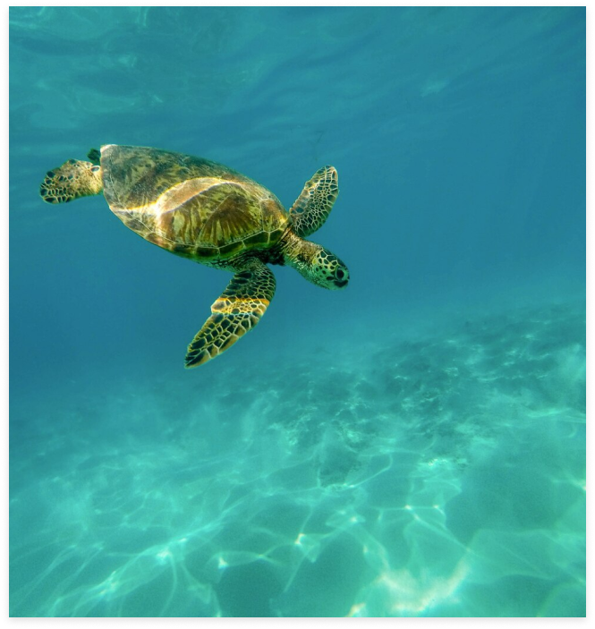

Ocean Guard
A Saúde do
Oceano
Os oceanos cobrem mais de 70% da superfície da Terra e são essenciais para a vida no planeta. Eles regulam o clima, fornecem alimentos, absorvem dióxido de carbono e são o lar de uma biodiversidade incrível.
No entanto, a saúde dos oceanos está em risco devido a diversas ameaças provocadas pela atividade humana. Este problema urgente requer atenção e ação imediata.
Um dos maiores desafios que os oceanos enfrentam é a poluição. Milhões de toneladas de lixo, principalmente plásticos, são despejados nos mares todos os anos.
Esse lixo não apenas prejudica a vida marinha, mas também afeta a cadeia alimentar, chegando até aos seres humanos.
Microplásticos têm sido encontrados em peixes e frutos do mar, representando um risco potencial para a saúde.
Somos uma empresa de tecnologia que utiliza automações de inteligência artificial para preservar a saúde dos oceanos.
Nossa missão é proteger e conservar esses ecossistemas vitais para o equilíbrio do planeta
 Inovações Tecnológicas Para
a Preservação dos Oceanos
Objetivos a serem
alcançados
Trabalhamos para reduzir a quantidade de lixo plástico e outros poluentes nos oceanos através de ações coordenadas de limpeza e conscientização. Nosso objetivo é proteger a saúde dos oceanos, promovendo práticas de conservação e recuperação.
Conscientização e Engajamento
Comunitário
Buscamos aumentar a conscientização pública sobre os problemas ambientais dos oceanos e educar comunidades costeiras sobre a importância da preservação marinha. Mobilizamos a comunidade para participar ativamente na proteção dos oceanos através de campanhas de voluntariado, mutirões de limpeza e eventos educacionais.
Além disso, colaboramos organizações nacionais para desenvolver e implementar políticas públicas eficazes para a conservação marinha.
Público Alvo Impactado
Nossa iniciativa é projetada para impactar positivamente uma ampla gama de grupos, incluindo comunidades
costeiras, pescadores, turistas, estudantes, ONGs e pesquisadores. Cada um desses grupos depende de oceanos
saudáveis para sua subsistência, lazer, educação ou pesquisa.
Ao oferecer uma plataforma que centraliza dados
e soluções, capacitamos essas comunidades a participar ativamente na proteção e preservação dos oceanos,
beneficiando tanto o meio ambiente quanto a sociedade como um todo.
Comunidades
As comunidades costeiras, que dependem dos recursos marinhos para sua subsistência e bem-estar, são diretamente beneficiadas pela preservação dos oceanos. Pescadores e indústrias pesqueiras, que dependem da pesca sustentável, se beneficiam da redução da poluição e da preservação dos habitats marinhos.
ONGs e Pesquisadores
Organizações Não Governamentais (ONGs) podem usar nossa plataforma para obter dados, coordenar ações e amplificar seus esforços. Pesquisadores e cientistas têm acesso a dados precisos e atualizados sobre a saúde dos oceanos, essenciais para suas pesquisas e estudos.
Turismo e Educação
O setor de turismo também é impactado positivamente, uma vez que a qualidade ambiental é um fator chave para o turismo sustentável. Estudantes e educadores encontram em nossa plataforma recursos educativos e oportunidades de engajamento prático.
Impacto Positivo da Solução
Conscientização e União
O engajamento comunitário aumenta com a participação das comunidades locais em iniciativas de conservação, fortalecendo o senso de responsabilidade e cooperação. A conscientização pública sobre os desafios ambientais dos oceanos e as práticas sustentáveis é ampliada através de recursos educativos contínuos.
Economia
Além disso, nossa solução apoia a economia local, melhorando as condições para atividades econômicas sustentáveis como pesca e turismo. Também influenciamos positivamente a criação e implementação de políticas públicas que promovem a conservação dos oceanos.
Como a Solução pode ajudar no dia a dia
Os usuários podem acessar rapidamente dados sobre a qualidade da água e incidentes ambientais em suas áreas, o que, por sua vez, ajuda a entenderem melhor o impacto de suas ações e a monitorarem o progresso ao longo do tempo. Consequentemente, com a redução da poluição e a melhoria da qualidade da água, as comunidades costeiras podem desfrutar de um ambiente mais saudável. Esse benefício impacta diretamente a saúde pública e a segurança alimentar.